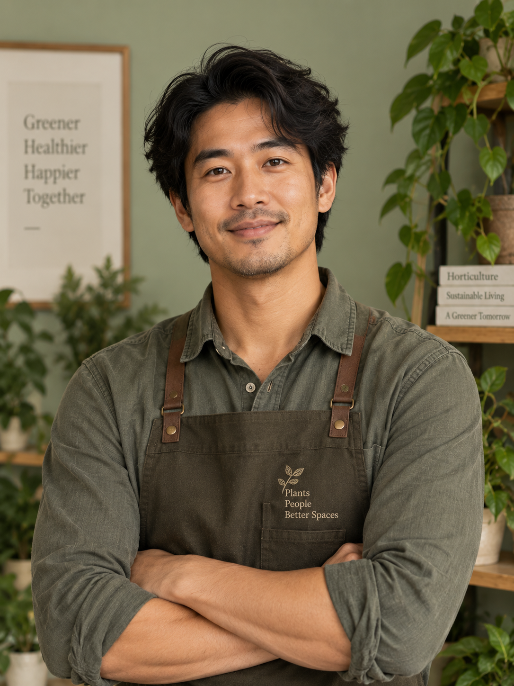

Rooted in Nature.
Built for Life.
Founded on the belief that a garden is a dialogue between architecture and the earth, Verdana Studio crafts landscapes that breathe, evolve, and inspire.
Two Decades of Growth
The First Seed
Founded by Eleanor & Thomas Vance in a small Cotswolds studio, focusing entirely on native woodland garden restoration.
Architectural Integration
Expanded our practice to include structural hardscaping, partnering with leading residential architects across the UK.
Commercial Estates
Secured our first multi-acre corporate campus project, blending our organic ethos with rigorous large-scale spatial engineering.
A Sustainable Future
Launched our closed-loop sustainability pledge, ensuring 100% of our projects utilize native ecology and smart water systems.
Our Guiding Principles
Endemic Ecology
We do not fight the landscape; we elevate it. By utilizing native flora, our gardens require less intervention and foster local wildlife naturally.
Timeless Craft
Trends fade, but stone endures. We design structural elements that patinate beautifully, ensuring the garden looks as though it has always been there.
Human Sanctuary
A garden must serve its inhabitants. We create secluded corners for reflection, open lawns for play, and terraces designed for human connection.
Meet the Studio
Eleanor Vance
Principal Landscape Architect"A garden is a canvas that paints itself new every season."
Thomas Vance
Director of Hardscaping"Good structure is silent. You feel it before you see it."

Marcus Li
Senior Planting Designer"Texture and movement are just as important as color."
Sarah Jenkins
Ecological Consultant"We design for humans, but we plant for the ecosystem."
"Verdana Studio proves that luxury and deep ecological responsibility are not mutually exclusive. Their gardens are masterpieces of restraint."
"A masterclass in textural planting. The way they blend rigid architectural forms with wild, flowing meadows is unparalleled in modern British design."
We'd Love to Hear
Your Story.
Every great landscape begins with a simple conversation about how you want to live outdoors. Let’s create something beautiful together.
Email the Studio